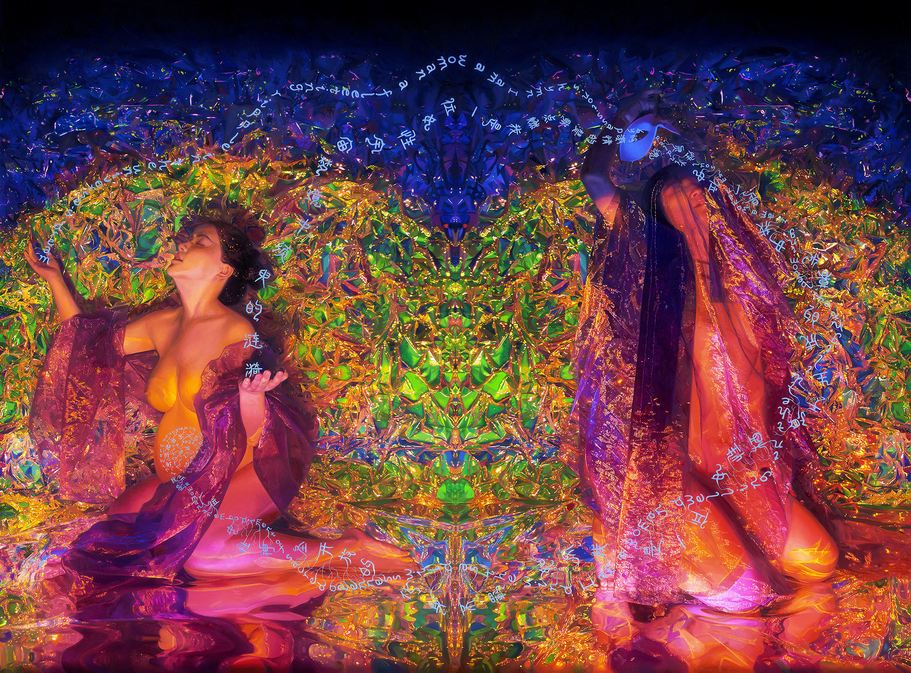

In the folds of the veil, causality entwines,
logos flickers.
In the tides of the womb, words are born,
eros stirs.
Inspired by the philosophy of Indra's Net and the writings of Ira Livingston, the oil painting Maya and the Shamaness: A Return to the Sublime reconstructs time, language, and perception in response to the existential crisis of the technological age. While AI reduces language to abstract data and predictive algorithms, lived language continuously rewires neural circuits and reshapes the boundaries of reality, keeping the future perpetually open. In this sense, the painting enacts language as a living system coupled with perception and the body, generating meaning through resonance rather than representation. It lifts the mask of linear Logos, pointing toward a wholeness always present through autopoiesis embedded in sympoiesis.
Two heterogeneous goddesses form a non-dual generative loop. As poems recursively emerge between them, viewers shift between reading and seeing, and words